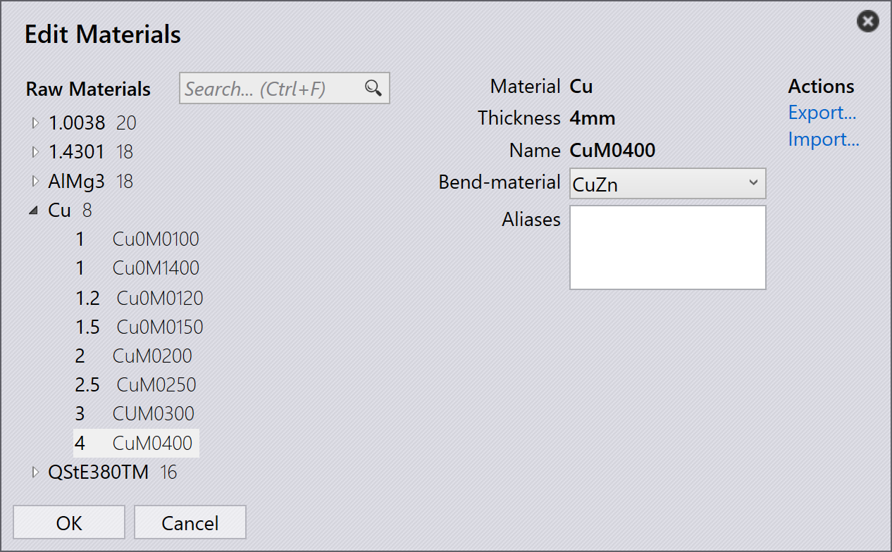

Malzeme eşleme
Alternatif olarak, malzemeyi doğrudan TecZone’ten eşleyebilirsiniz. Aliases, fabrikanızda yaygın olarak kullanılan malzeme adları için kullanılabilir.
Factory → Sheets → Map… → Materials, Edit Materials sayfası görüntülenir. Malzemeler ve Raw materials, Bükme Malzemesine (1.0036, 1.4301, AlMg3,…) karşı eşlemek ve/veya Aliases belirtmek için solda listelenir.
-
Copper Malzemesine tıklayın ve Cu’yu seçin. Malzeme tüm Copper Ham Malzemelerine (Copper-15, Copper-20, Copper-25, Copper-30, Copper-40) atanır.
-
Copper-40 Ham Malzemesine tıklayın ve CuZn’yi seçin.
